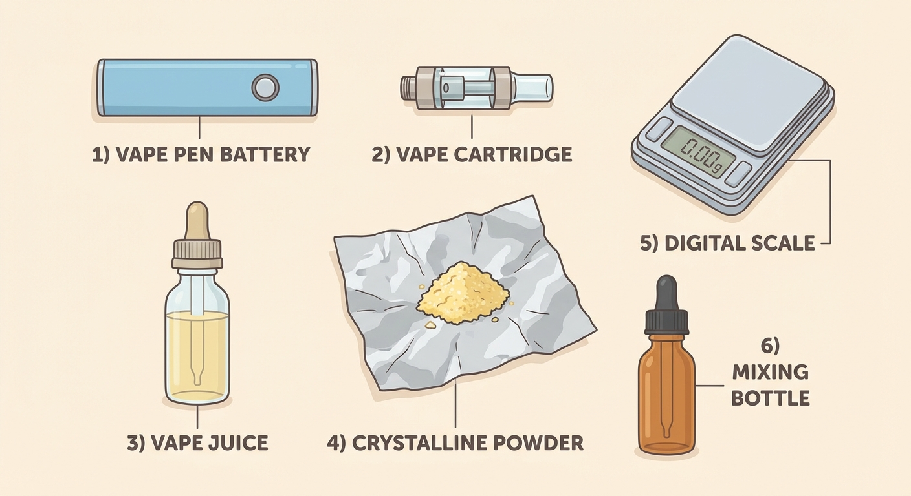
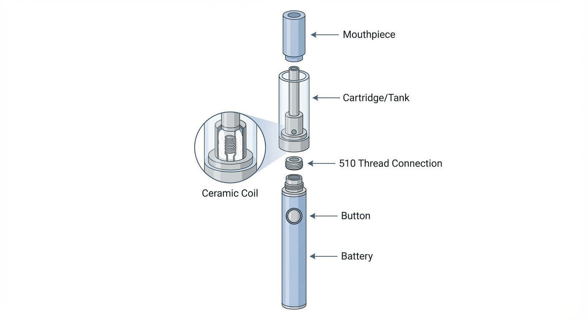
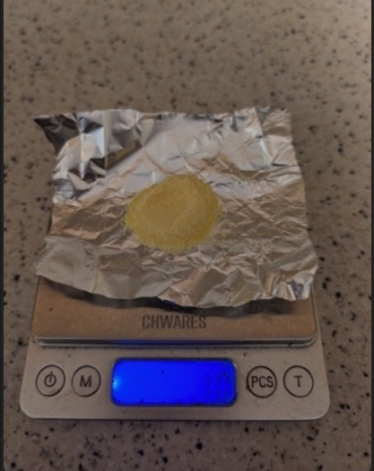
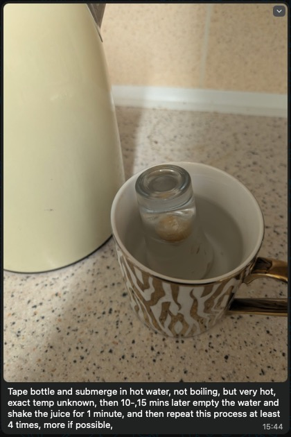
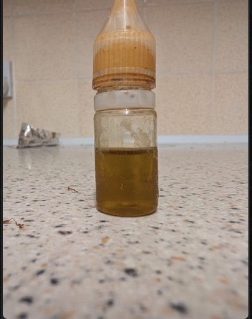
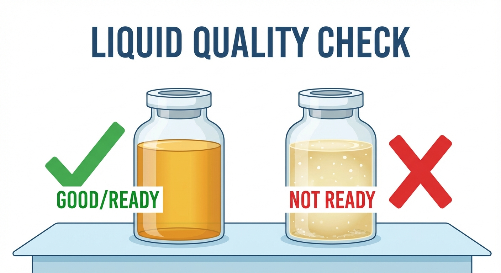

Before you can use DMT to abort cluster headache attacks, you’ll need to prepare a vape pen loaded with DMT liquid. This page walks you through everything, from buying the equipment to having a loaded pen ready to use.
Time needed: About 30 minutes of active work, plus 1 hour of waiting time.
If you’ve never used a vape before, don’t worry. It’s simpler than it looks. You’re essentially just dissolving a powder into a liquid and loading it into a small device. If you can cook a dish following a simple recipe, you can do this.
You need six things. Most can be ordered online and arrive within a few days. Everything except the DMT is standard, legal vaping equipment. You don’t need to mention DMT when buying. Vape shops (online or in-person), Amazon, and eBay all carry these items.

There are two ways to set up your vape pen:
The rest of this guide works with either option. The instructions below cover Option A in detail; if you’re using a complete kit, the mixing steps are identical: you just fill your kit’s tank instead of a cartridge.
| # | Item | What to look for | Cost |
|---|---|---|---|
| 1 | Vape pen battery | Variable voltage, 510 thread (skip if using complete kit) | $25–50 |
| 2 | Ceramic coil cartridge | Ceramic coil, 510 thread (skip if using complete kit) | $5–15 |
| 3 | Nicotine-free vape juice | 50/50 PG/VG ratio, labeled “0mg” | $5–10 |
| 4 | DMT powder | Freebase form (pure, vaporizable) | Varies |
| 5 | Milligram scale | Reads to 0.01 g (centigram precision) | $10–20 |
| 6 | Small mixing bottle | ~10 ml, sealable, heat-resistant (glass ideal) | $1–5 |
Skip this if you’re buying a complete kit (Option B). It comes with a battery.
What it is: The bottom half of your vape pen: a small rechargeable battery with a button and a charging port.
What to look for: You need a battery with variable voltage. This means you can turn the temperature up or down with a button or dial. This matters because too low and the liquid doesn’t vaporize properly; too high and the DMT gets destroyed by heat. You’ll want to start at around 2.5 volts and adjust upward if needed. Most people find the right setting between 2.5–3.5 volts. The right setting produces smooth, visible vapor without any burnt taste.
Some recommended models:
Make sure the battery is fully charged before you need it. A dead battery during a cluster attack is the last thing you want. Charge it as soon as it arrives.
Skip this if you’re buying a complete kit (Option B). It comes with a tank and coil.
What it is: The top half of your vape pen: a small transparent tank that holds the liquid, with a built-in heating element (called a “coil”) at the bottom.
What to look for: Get one with a ceramic coil. Ceramic heats more evenly than metal, which means the DMT turns into vapor smoothly instead of burning. Look for cartridges labeled “ceramic.” CCELL is a popular brand that uses ceramic, but any ceramic cartridge will work. Make sure it fits your battery: most vape parts use a standard screw-on fitting called “510 thread.” When in doubt, ask the shop for a “510 thread ceramic cartridge.”

What it is: A flavored liquid that you’ll use as a base to dissolve the DMT into. It’s the same liquid that regular vapers use, but without nicotine (the label should say “0mg,” meaning zero milligrams of nicotine).
What to look for: Vape juice is made from two ingredients: propylene glycol (PG) and vegetable glycerin (VG). Get a bottle labeled 50/50 (meaning half of each). This ratio dissolves DMT well and produces smooth vapor. The flavor doesn’t matter; pick whatever you like.
What it is: The active ingredient. DMT in its pure form looks like a white-to-yellowish crystalline powder. You need the freebase form, which just means the pure, vaporizable form of the molecule (as opposed to a salt form, which doesn’t vaporize efficiently).
What it is: A small digital scale that measures in increments of 0.01 grams (one hundredth of a gram). You need this to weigh the DMT accurately. Eyeballing it is not safe: too much or too little will affect your dose.
What to look for: Any digital scale that reads to 0.01 g (sometimes labeled “0.01g precision” or “centigram scale”). They’re about the size of a smartphone. Commonly sold as jewelry scales or kitchen precision scales.
What it is: A small empty bottle (about 10 ml) to mix the DMT and vape juice in. A small glass bottle with a dropper (a squeeze-top that lets you dispense liquid drop by drop) works well. You can also use a small empty vape juice bottle.
What to look for: It should be sealable (screw cap or dropper top) and heat-resistant. Glass is ideal. A plastic dropper bottle also works fine.
This is the main preparation step: dissolving DMT powder into vape juice so it can be vaporized. We’re using the bottle method: you mix everything in a small bottle using hot water to help the powder dissolve.
The ratio: We use 1 gram of DMT per 3 milliliters of vape juice (written as 1:3). This concentration dissolves fully and won’t clog your cartridge.
If you have more or less than 1 gram: Scale the liquid proportionally. For example, 0.5 g of DMT needs 1.5 ml of juice. 2 g of DMT needs 6 ml. The ratio is always 1 part DMT to 3 parts liquid by weight.
Place a piece of aluminum foil on your scale and zero it out (press the “tare” or “T” button so the scale reads 0.00 with the foil on it). Then carefully add DMT powder until the scale reads 1.00 g (1 gram).

1 gram of DMT powder on a digital scale. The aluminum foil makes it easy to pour the powder afterward.
Handling tip: DMT powder won’t make you trip through skin contact, but you want the DMT in the bottle, not on your hands. Work in a calm spot without wind drafts. The powder is fine and can become airborne.
You need 3 ml (3 milliliters) of vape juice. The easiest way to measure this is by weight using your scale: place your mixing bottle on the scale, tare it to zero, then add vape juice until the scale reads 3.00 g (vape juice has roughly the same density as water, so 3 grams ≈ 3 ml).

Nicotine-free (0mg) vape juice with a 50/50 PG/VG ratio. Any brand with these specs works.

3 ml of vape juice measured into the small mixing bottle.
Roll a small piece of paper into a cone/funnel shape and use it to carefully pour the DMT powder from the foil into the mixing bottle. Go slowly; the powder is fine and you don’t want to spill any.

A rolled piece of paper makes a simple funnel. Tilt the foil gently to slide the powder in.
What to expect: The powder will sit on top of the liquid or sink to the bottom. It will not dissolve on its own — that’s what the next steps are for.
Screw the cap on tightly. Shake the bottle vigorously for about 1 minute.

After shaking for 1 minute, the mixture will look cloudy and murky like this. That’s normal. The DMT hasn’t fully dissolved yet.
What to look for: The liquid should be uniformly cloudy.
First, wrap the bottle (especially the cap/top) with clear tape or cling film. This is critical: if water gets into the mixture, it’s ruined.

Wrap the cap and top of the bottle in tape so that no water can seep in during the hot water bath.
Then, heat up water. The water should be very hot but not boiling. Pour the hot water into a mug. Place the sealed, taped bottle into the mug of hot water. Let it sit for 10–15 minutes.

The bottle sits in hot water in a mug. The heat helps the DMT dissolve into the liquid. Make sure the water level doesn’t go above the taped seal.
After 10–15 minutes, take the bottle out of the water. Shake it vigorously for 1 minute again. Then:
Repeat this cycle 3–4 times total. Each round dissolves more of the DMT. You’ll see the liquid getting clearer with each cycle.
After 3–4 hot water cycles, the mixture should be a clear amber/golden liquid, ranging from pale gold (like apple juice) to deeper amber (like honey). Hold it up to a light:

Finished: a clear, amber-colored liquid. No cloudiness, no visible specks or crystals. This is ready to load into your cartridge.

Why clarity matters: Any undissolved DMT crystals will clog the tiny holes in your cartridge’s coil. A clogged cartridge won’t produce vapor, which means it won’t work when you need it during an attack.
Now you need to get the liquid from the mixing bottle into your vape pen’s cartridge.
This can happen if the pen gets cold, and it’s completely normal. The DMT has just turned back into tiny solid crystals. Don’t throw it away.
To fix it:
Sometimes DMT re-crystallizes right at the mouthpiece opening, blocking airflow. If you try to inhale and feel resistance:
Turn the voltage down. A burnt taste means the temperature is too high and the DMT is being destroyed rather than vaporized. You want smooth, clean-tasting vapor. Drop the voltage by 0.2–0.3 V and try again.
Save a screenshot of this section for quick access.
| Item | What to ask for | Approx. cost |
|---|---|---|
| Vape pen battery | “Variable voltage, 510 thread battery” (or complete kit) | $25–50 |
| Cartridge | “510 thread ceramic coil cartridge” (skip if using kit) | $5–15 |
| Vape juice | “50/50 nicotine-free vape juice” | $5–10 |
| DMT powder | Pure freebase powder/crystal form | $80–$250 per gram |
| Digital scale | Reads to 0.01 grams | $10–20 |
| Small mixing bottle | ~10 ml, sealable, temperature-resistant | $1–5 |